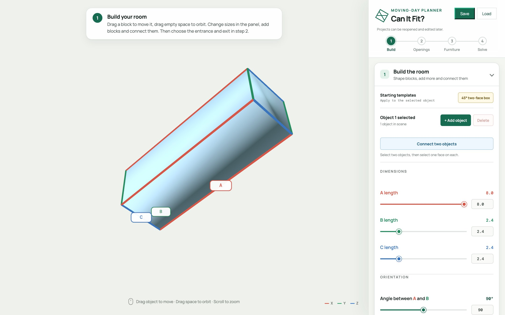
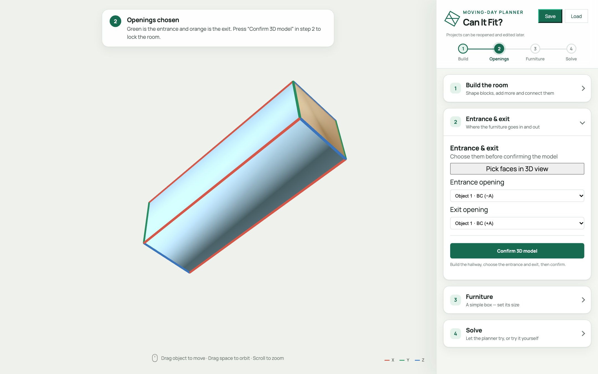
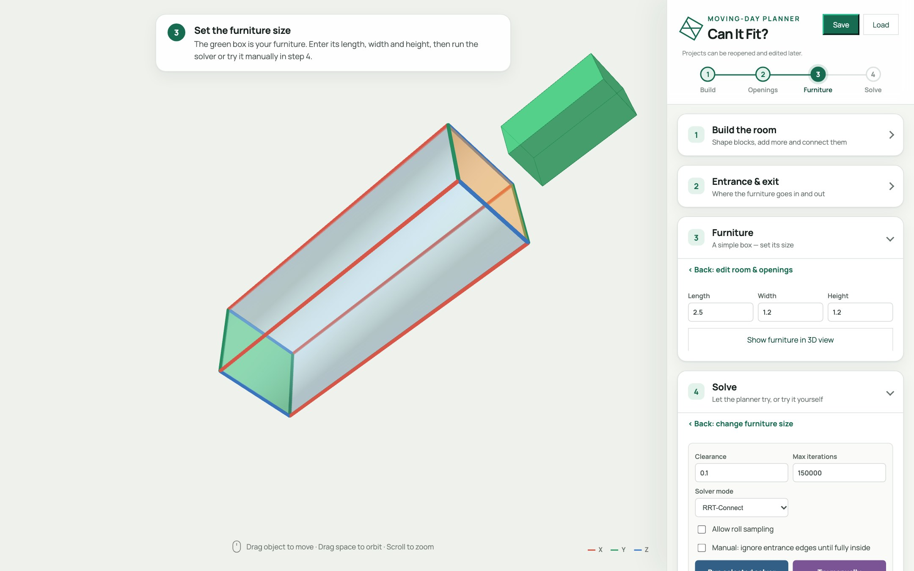
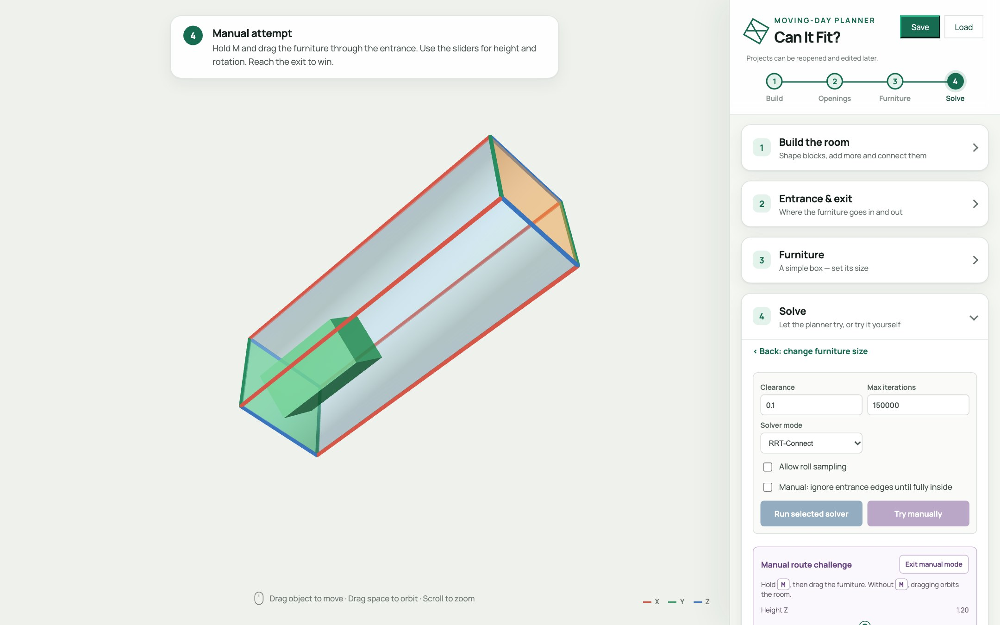
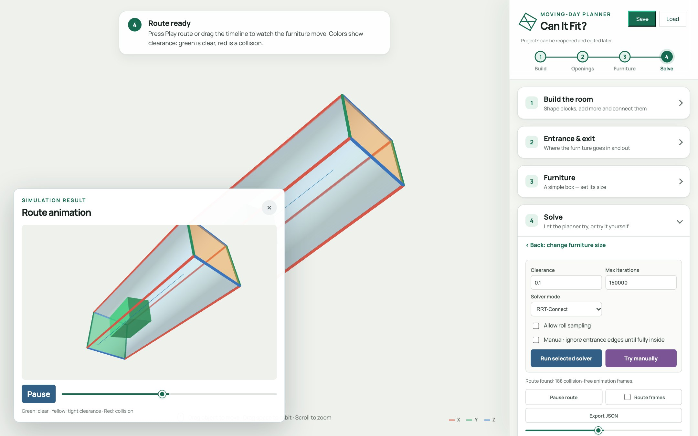

Will the sofa make it through the hallway? Let's build the room, then let a robot-style planner figure it out — and learn how it thinks.
Rooms are boxes defined by an origin and three edge vectors. Stretch, skew, add, connect.
A probabilistic one (RRT-Connect) and a deterministic straight-shot heuristic.
Hold M, drag the furniture yourself. The app tells you when you collide.
8 · 2.4 · 2.4 — instant hallway.

2.5 · 1.2 · 1.2.0.1) — a safety margin around every side.
M and drag. Use the sliders for height, yaw, pitch, roll.

How is a position stored?
How do we know it's legal?
How do we find a path?
ZYX, converted to a quaternionp = O + sA + tB + uC with s, t, u ∈ [0, 1]Random sampling alone rarely threads a tight doorway. So we seed the search:
| RRT-Connect | Heuristic | |
|---|---|---|
| Idea | Random search | Slide it in straight |
| Result | Different each run | Same every run |
| Handles turns | Yes | Via handoffs |
| On failure | Try again | Shows the stuck spot |
Humans are great at the awkward entrance. Planners are great at the long middle.
2.5 · 1.2 · 1.2, clearance 0.1Share your number in the comments.
Three.js loads from a CDN, so you just need a browser and an internet connection.
app.js scene & UIplanner.js collision & solversmanual.js drag-it-yourselfindex.html + styles.css